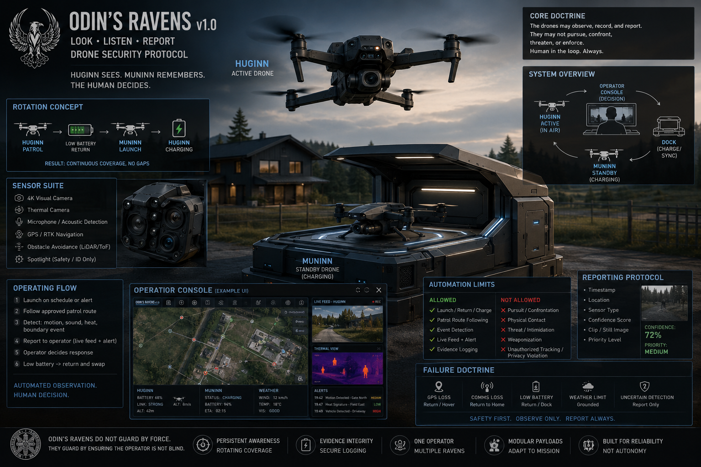

Recovered concept artwork
ODIN'S RAVENS v1.0
Purpose and relationship
An unarmed observation-and-reporting concept for authorized property monitoring, with human decisions and a proposed rotating pair of drones.

Evidence and limits
The artwork describes an observation doctrine, not demonstrated continuous coverage, detection accuracy, privacy compliance, autonomous docking reliability or flight authorization.
Next review gate
Independent review of consent, privacy, airspace and fail-safe behavior, using non-personal test data and a controlled site.
Recovered from Mr. Peloquin's collaborative design collection; individual illustration authorship is unverified.